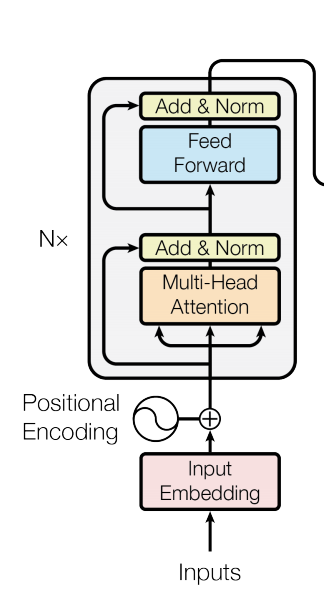

Assignment 3: Question Answering
Welcome to this week’s assignment of course 4. In this you will explore question answering. You will implement the “Text to Text Transfer from Transformers” (better known as T5). Since you implemented transformers from scratch last week you will now be able to use them.
Outline
Overview
This assignment will be different from the two previous ones. Due to memory and time constraints of this environment you will not be able to train a model and use it for inference. Instead you will create the necessary building blocks for the transformer encoder model and will use a pretrained version of the same model in two ungraded labs after this assignment.
After completing these 3 (1 graded and 2 ungraded) labs you will:
- Implement the code neccesary for Bidirectional Encoder Representation from Transformer (BERT).
- Understand how the C4 dataset is structured.
- Use a pretrained model for inference.
- Understand how the “Text to Text Transfer from Transformers” or T5 model works.
Part 0: Importing the Packages
1 | import ast |
Part 1: C4 Dataset
The C4 is a huge data set. For the purpose of this assignment you will use a few examples out of it which are present in data.txt. C4 is based on the common crawl project. Feel free to read more on their website.
Run the cell below to see how the examples look like.
1 | # load example jsons |
1 | # Printing the examples to see how the data looks like |
example number 1:
{'content-length': b'1970', 'content-type': b'text/plain', 'text': b'Beginners BBQ Class Taking Place in Missoula!\nDo you want to get better at making delicious BBQ? You will have the opportunity, put this on your calendar now. Thursday, September 22nd join World Class BBQ Champion, Tony Balay from Lonestar Smoke Rangers. He will be teaching a beginner level class for everyone who wants to get better with their culinary skills.\nHe will teach you everything you need to know to compete in a KCBS BBQ competition, including techniques, recipes, timelines, meat selection and trimming, plus smoker and fire information.\nThe cost to be in the class is $35 per person, and for spectators it is free. Included in the cost will be either a t-shirt or apron and you will be tasting samples of each meat that is prepared.', 'timestamp': b'2019-04-25T12:57:54Z', 'url': b'https://klyq.com/beginners-bbq-class-taking-place-in-missoula/'}
example number 2:
{'content-length': b'12064', 'content-type': b'text/plain', 'text': b'Discussion in \'Mac OS X Lion (10.7)\' started by axboi87, Jan 20, 2012.\nI\'ve got a 500gb internal drive and a 240gb SSD.\nWhen trying to restore using disk utility i\'m given the error "Not enough space on disk ____ to restore"\nBut I shouldn\'t have to do that!!!\nAny ideas or workarounds before resorting to the above?\nUse Carbon Copy Cloner to copy one drive to the other. I\'ve done this several times going from larger HDD to smaller SSD and I wound up with a bootable SSD drive. One step you have to remember not to skip is to use Disk Utility to partition the SSD as GUID partition scheme HFS+ before doing the clone. If it came Apple Partition Scheme, even if you let CCC do the clone, the resulting drive won\'t be bootable. CCC usually works in "file mode" and it can easily copy a larger drive (that\'s mostly empty) onto a smaller drive. If you tell CCC to clone a drive you did NOT boot from, it can work in block copy mode where the destination drive must be the same size or larger than the drive you are cloning from (if I recall).\nI\'ve actually done this somehow on Disk Utility several times (booting from a different drive (or even the dvd) so not running disk utility from the drive your cloning) and had it work just fine from larger to smaller bootable clone. Definitely format the drive cloning to first, as bootable Apple etc..\nThanks for pointing this out. My only experience using DU to go larger to smaller was when I was trying to make a Lion install stick and I was unable to restore InstallESD.dmg to a 4 GB USB stick but of course the reason that wouldn\'t fit is there was slightly more than 4 GB of data.', 'timestamp': b'2019-04-21T10:07:13Z', 'url': b'https://forums.macrumors.com/threads/restore-from-larger-disk-to-smaller-disk.1311329/'}
example number 3:
{'content-length': b'5235', 'content-type': b'text/plain', 'text': b'Foil plaid lycra and spandex shortall with metallic slinky insets. Attached metallic elastic belt with O-ring. Headband included. Great hip hop or jazz dance costume. Made in the USA.', 'timestamp': b'2019-04-25T10:40:23Z', 'url': b'https://awishcometrue.com/Catalogs/Clearance/Tweens/V1960-Find-A-Way'}
example number 4:
{'content-length': b'4967', 'content-type': b'text/plain', 'text': b"How many backlinks per day for new site?\nDiscussion in 'Black Hat SEO' started by Omoplata, Dec 3, 2010.\n1) for a newly created site, what's the max # backlinks per day I should do to be safe?\n2) how long do I have to let my site age before I can start making more blinks?\nI did about 6000 forum profiles every 24 hours for 10 days for one of my sites which had a brand new domain.\nThere is three backlinks for every of these forum profile so thats 18 000 backlinks every 24 hours and nothing happened in terms of being penalized or sandboxed. This is now maybe 3 months ago and the site is ranking on first page for a lot of my targeted keywords.\nbuild more you can in starting but do manual submission and not spammy type means manual + relevant to the post.. then after 1 month you can make a big blast..\nWow, dude, you built 18k backlinks a day on a brand new site? How quickly did you rank up? What kind of competition/searches did those keywords have?", 'timestamp': b'2019-04-21T12:46:19Z', 'url': b'https://www.blackhatworld.com/seo/how-many-backlinks-per-day-for-new-site.258615/'}
example number 5:
{'content-length': b'4499', 'content-type': b'text/plain', 'text': b'The Denver Board of Education opened the 2017-18 school year with an update on projects that include new construction, upgrades, heat mitigation and quality learning environments.\nWe are excited that Denver students will be the beneficiaries of a four year, $572 million General Obligation Bond. Since the passage of the bond, our construction team has worked to schedule the projects over the four-year term of the bond.\nDenver voters on Tuesday approved bond and mill funding measures for students in Denver Public Schools, agreeing to invest $572 million in bond funding to build and improve schools and $56.6 million in operating dollars to support proven initiatives, such as early literacy.\nDenver voters say yes to bond and mill levy funding support for DPS students and schools. Click to learn more about the details of the voter-approved bond measure.\nDenver voters on Nov. 8 approved bond and mill funding measures for DPS students and schools. Learn more about what\xe2\x80\x99s included in the mill levy measure.', 'timestamp': b'2019-04-20T14:33:21Z', 'url': b'http://bond.dpsk12.org/category/news/'}
Notice the b before each string? This means that this data comes as bytes rather than strings. Strings are actually lists of bytes so for the rest of the assignments the name strings will be used to describe the data.
To check this run the following cell:
1 | type(example_jsons[0].get('text')) |
bytes
1.1 Pre-Training Objective
Note: The word “mask” will be used throughout this assignment in context of hiding/removing word(s)
You will be implementing the BERT loss as shown in the following image.

Assume you have the following text: **Thank you for inviting me to your party last week** </span>
Now as input you will mask the words in red in the text:
Input: Thank you X me to your party Y week.
Output: The model should predict the words(s) for X and Y.
Z is used to represent the end.
1.2 Process C4
C4 only has the plain string text field, so you will tokenize and have inputs and targets out of it for supervised learning. Given your inputs, the goal is to predict the targets during training.
You will now take the text and convert it to inputs and targets.
1 | # Grab text field from dictionary |
1 | # First text example |
b'The Denver Board of Education opened the 2017-18 school year with an update on projects that include new construction, upgrades, heat mitigation and quality learning environments.\nWe are excited that Denver students will be the beneficiaries of a four year, $572 million General Obligation Bond. Since the passage of the bond, our construction team has worked to schedule the projects over the four-year term of the bond.\nDenver voters on Tuesday approved bond and mill funding measures for students in Denver Public Schools, agreeing to invest $572 million in bond funding to build and improve schools and $56.6 million in operating dollars to support proven initiatives, such as early literacy.\nDenver voters say yes to bond and mill levy funding support for DPS students and schools. Click to learn more about the details of the voter-approved bond measure.\nDenver voters on Nov. 8 approved bond and mill funding measures for DPS students and schools. Learn more about what\xe2\x80\x99s included in the mill levy measure.'
1.2.1 Decode to natural language
The following functions will help you detokenize andtokenize the text data.
The sentencepiece vocabulary was used to convert from text to ids. This vocabulary file is loaded and used in this helper functions.
natural_language_texts has the text from the examples we gave you.
Run the cells below to see what is going on.
1 | # Special tokens |
1 | # printing the encoding of each word to see how subwords are tokenized |
[([12847, 277], b'Beginners'), ([15068], b'BBQ'), ([4501], b'Class'), ([3, 12297], b'Taking'), ([3399], b'Place'), ([16], b'in'), ([5964, 7115, 9, 55], b'Missoula!'), ([531], b'Do'), ([25], b'you'), ([241], b'want'), ([12], b'to'), ([129], b'get'), ([394], b'better'), ([44], b'at'), ([492], b'making'), ([3326], b'delicious'), ([15068, 58], b'BBQ?'), ([148], b'You'), ([56], b'will'), ([43], b'have'), ([8], b'the'), ([1004, 6], b'opportunity,'), ([474], b'put'), ([48], b'this'), ([30], b'on'), ([39], b'your'), ([4793], b'calendar'), ([230, 5], b'now.'), ([2721, 6], b'Thursday,'), ([1600], b'September'), ([1630, 727], b'22nd'), ([1715], b'join'), ([1150], b'World'), ([4501], b'Class'), ([15068], b'BBQ'), ([16127, 6], b'Champion,'), ([9137], b'Tony'), ([2659, 5595], b'Balay'), ([45], b'from'), ([301, 782, 3624], b'Lonestar'), ([14627, 15], b'Smoke'), ([12612, 277, 5], b'Rangers.'), ([216], b'He'), ([56], b'will'), ([36], b'be'), ([2119], b'teaching'), ([3, 9], b'a'), ([19529], b'beginner'), ([593], b'level'), ([853], b'class'), ([21], b'for'), ([921], b'everyone'), ([113], b'who'), ([2746], b'wants'), ([12], b'to'), ([129], b'get'), ([394], b'better'), ([28], b'with'), ([70], b'their'), ([17712], b'culinary'), ([1098, 5], b'skills.'), ([216], b'He'), ([56], b'will'), ([3884], b'teach'), ([25], b'you'), ([762], b'everything'), ([25], b'you'), ([174], b'need'), ([12], b'to'), ([214], b'know'), ([12], b'to'), ([5978], b'compete'), ([16], b'in'), ([3, 9], b'a'), ([3, 23405, 4547], b'KCBS'), ([15068], b'BBQ'), ([2259, 6], b'competition,'), ([379], b'including'), ([2097, 6], b'techniques,'), ([5459, 6], b'recipes,'), ([13618, 7, 6], b'timelines,'), ([3604], b'meat'), ([1801], b'selection'), ([11], b'and'), ([27856, 6], b'trimming,'), ([303], b'plus'), ([24190], b'smoker'), ([11], b'and'), ([1472], b'fire'), ([251, 5], b'information.'), ([37], b'The'), ([583], b'cost'), ([12], b'to'), ([36], b'be'), ([16], b'in'), ([8], b'the'), ([853], b'class'), ([19], b'is'), ([25264], b'$35'), ([399], b'per'), ([568, 6], b'person,'), ([11], b'and'), ([21], b'for'), ([21380, 7], b'spectators'), ([34], b'it'), ([19], b'is'), ([339, 5], b'free.'), ([15746, 26], b'Included'), ([16], b'in'), ([8], b'the'), ([583], b'cost'), ([56], b'will'), ([36], b'be'), ([893], b'either'), ([3, 9], b'a'), ([3, 17, 18, 9486], b't-shirt'), ([42], b'or'), ([3, 9, 1409, 29], b'apron'), ([11], b'and'), ([25], b'you'), ([56], b'will'), ([36], b'be'), ([12246], b'tasting'), ([5977], b'samples'), ([13], b'of'), ([284], b'each'), ([3604], b'meat'), ([24], b'that'), ([19], b'is'), ([2657, 5], b'prepared.')]
1 | # We can see that detokenize successfully undoes the tokenization |
tokenized: [12847 277]
detokenized: Beginners
As you can see above, you were able to take a piece of string and tokenize it.
Now you will create input and target pairs that will allow you to train your model. T5 uses the ids at the end of the vocab file as sentinels. For example, it will replace:
vocab_size - 1by<Z>vocab_size - 2by<Y>- and so forth.
It assigns every word a chr.
The pretty_decode function below, which you will use in a bit, helps in handling the type when decoding. Take a look and try to understand what the function is doing.
Notice that:1
string.ascii_letters = 'abcdefghijklmnopqrstuvwxyzABCDEFGHIJKLMNOPQRSTUVWXYZ'
NOTE: Targets may have more than the 52 sentinels we replace, but this is just to give you an idea of things.
1 | vocab_size = trax.data.vocab_size( |
1 | sentinels = get_sentinels(vocab_size, display=True) |
The sentinel is <Z> and the decoded token is: Internațional
The sentinel is <Y> and the decoded token is: erwachsene
The sentinel is <X> and the decoded token is: Cushion
The sentinel is <W> and the decoded token is: imunitar
The sentinel is <V> and the decoded token is: Intellectual
The sentinel is <U> and the decoded token is: traditi
The sentinel is <T> and the decoded token is: disguise
The sentinel is <S> and the decoded token is: exerce
The sentinel is <R> and the decoded token is: nourishe
The sentinel is <Q> and the decoded token is: predominant
The sentinel is <P> and the decoded token is: amitié
The sentinel is <O> and the decoded token is: erkennt
The sentinel is <N> and the decoded token is: dimension
The sentinel is <M> and the decoded token is: inférieur
The sentinel is <L> and the decoded token is: refugi
The sentinel is <K> and the decoded token is: cheddar
The sentinel is <J> and the decoded token is: unterlieg
The sentinel is <I> and the decoded token is: garanteaz
The sentinel is <H> and the decoded token is: făcute
The sentinel is <G> and the decoded token is: réglage
The sentinel is <F> and the decoded token is: pedepse
The sentinel is <E> and the decoded token is: Germain
The sentinel is <D> and the decoded token is: distinctly
The sentinel is <C> and the decoded token is: Schraub
The sentinel is <B> and the decoded token is: emanat
The sentinel is <A> and the decoded token is: trimestre
The sentinel is <z> and the decoded token is: disrespect
The sentinel is <y> and the decoded token is: Erasmus
The sentinel is <x> and the decoded token is: Australia
The sentinel is <w> and the decoded token is: permeabil
The sentinel is <v> and the decoded token is: deseori
The sentinel is <u> and the decoded token is: manipulated
The sentinel is <t> and the decoded token is: suggér
The sentinel is <s> and the decoded token is: corespund
The sentinel is <r> and the decoded token is: nitro
The sentinel is <q> and the decoded token is: oyons
The sentinel is <p> and the decoded token is: Account
The sentinel is <o> and the decoded token is: échéan
The sentinel is <n> and the decoded token is: laundering
The sentinel is <m> and the decoded token is: genealogy
The sentinel is <l> and the decoded token is: QuickBooks
The sentinel is <k> and the decoded token is: constituted
The sentinel is <j> and the decoded token is: Fertigung
The sentinel is <i> and the decoded token is: goutte
The sentinel is <h> and the decoded token is: regulă
The sentinel is <g> and the decoded token is: overwhelmingly
The sentinel is <f> and the decoded token is: émerg
The sentinel is <e> and the decoded token is: broyeur
The sentinel is <d> and the decoded token is: povești
The sentinel is <c> and the decoded token is: emulator
The sentinel is <b> and the decoded token is: halloween
The sentinel is <a> and the decoded token is: combustibil
1 | def pretty_decode(encoded_str_list, sentinels=sentinels): |
1 | pretty_decode("I want to dress up as an Intellectual this halloween.") |
'I want to dress up as an <V> this <b>.'
The functions above make your inputs and targets more readable. For example, you might see something like this once you implement the masking function below.
- Input sentence: Younes and Lukasz were working together in the lab yesterday after lunch.
- Input: Younes and Lukasz Z together in the Y yesterday after lunch.
- Target: Z were working Y lab.
1.3 Tokenizing and Masking
You will now implement the tokenize_and_mask function. This function will allow you to tokenize and mask input words with a noise probability. We usually mask 15% of the words.
Exercise 01
1 | # UNQ_C1 |
1 | # Some logic to mock a np.random value generator |
input string:
b'Beginners BBQ Class Taking Place in Missoula!\nDo you want to get better at making delicious BBQ? You will have the opportunity, put this on your calendar now. Thursday, September 22nd join World Class BBQ Champion, Tony Balay from Lonestar Smoke Rangers. He will be teaching a beginner level class for everyone who wants to get better with their culinary skills.\nHe will teach you everything you need to know to compete in a KCBS BBQ competition, including techniques, recipes, timelines, meat selection and trimming, plus smoker and fire information.\nThe cost to be in the class is $35 per person, and for spectators it is free. Included in the cost will be either a t-shirt or apron and you will be tasting samples of each meat that is prepared.'
tokenized inputs:
[31999, 15068, 4501, 3, 12297, 3399, 16, 5964, 7115, 31998, 531, 25, 241, 12, 129, 394, 44, 492, 31997, 58, 148, 56, 43, 8, 1004, 6, 474, 31996, 39, 4793, 230, 5, 2721, 6, 1600, 1630, 31995, 1150, 4501, 15068, 16127, 6, 9137, 2659, 5595, 31994, 782, 3624, 14627, 15, 12612, 277, 5, 216, 31993, 2119, 3, 9, 19529, 593, 853, 21, 921, 31992, 12, 129, 394, 28, 70, 17712, 1098, 5, 31991, 3884, 25, 762, 25, 174, 12, 214, 12, 31990, 3, 9, 3, 23405, 4547, 15068, 2259, 6, 31989, 6, 5459, 6, 13618, 7, 6, 3604, 1801, 31988, 6, 303, 24190, 11, 1472, 251, 5, 37, 31987, 36, 16, 8, 853, 19, 25264, 399, 568, 31986, 21, 21380, 7, 34, 19, 339, 5, 15746, 31985, 8, 583, 56, 36, 893, 3, 9, 3, 31984, 9486, 42, 3, 9, 1409, 29, 11, 25, 31983, 12246, 5977, 13, 284, 3604, 24, 19, 2657, 31982]
targets:
[31999, 12847, 277, 31998, 9, 55, 31997, 3326, 15068, 31996, 48, 30, 31995, 727, 1715, 31994, 45, 301, 31993, 56, 36, 31992, 113, 2746, 31991, 216, 56, 31990, 5978, 16, 31989, 379, 2097, 31988, 11, 27856, 31987, 583, 12, 31986, 6, 11, 31985, 26, 16, 31984, 17, 18, 31983, 56, 36, 31982, 5]
Expected Output:
1 | b'Beginners BBQ Class Taking Place in Missoula!\nDo you want to get better at making delicious BBQ? You will have the opportunity, put this on your calendar now. Thursday, September 22nd join World Class BBQ Champion, Tony Balay from Lonestar Smoke Rangers. He will be teaching a beginner level class for everyone who wants to get better with their culinary skills.\nHe will teach you everything you need to know to compete in a KCBS BBQ competition, including techniques, recipes, timelines, meat selection and trimming, plus smoker and fire information.\nThe cost to be in the class is $35 per person, and for spectators it is free. Included in the cost will be either a t-shirt or apron and you will be tasting samples of each meat that is prepared.' |
You will now use the inputs and the targets from the tokenize_and_mask function you implemented above. Take a look at the masked sentence using your inps and targs from the sentence above.
1 | print('Inputs: \n\n', pretty_decode(inps)) |
Inputs:
<Z> BBQ Class Taking Place in Missoul <Y> Do you want to get better at making <X>? You will have the opportunity, put <W> your calendar now. Thursday, September 22 <V> World Class BBQ Champion, Tony Balay <U>onestar Smoke Rangers. He <T> teaching a beginner level class for everyone<S> to get better with their culinary skills.<R> teach you everything you need to know to <Q> a KCBS BBQ competition,<P>, recipes, timelines, meat selection <O>, plus smoker and fire information. The<N> be in the class is $35 per person <M> for spectators it is free. Include <L> the cost will be either a <K>shirt or apron and you <J> tasting samples of each meat that is prepared <I>
Targets:
<Z> Beginners <Y>a! <X> delicious BBQ <W> this on <V>nd join <U> from L <T> will be<S> who wants<R> He will <Q> compete in<P> including techniques <O> and trimming<N> cost to <M>, and <L>d in <K>t- <J> will be <I>.
1.4 Creating the Pairs
You will now create pairs using your dataset. You will iterate over your data and create (inp, targ) pairs using the functions that we have given you.
1 | # Apply tokenize_and_mask |
1 | def display_input_target_pairs(inputs_targets_pairs): |
1 | display_input_target_pairs(inputs_targets_pairs) |
[1]
inputs:
Beginners BBQ Class Taking <Z> in Missoul <Y>! Do you want to get
better at making delicious <X>? You will have the opportunity, <W>
this on <V> calendar now. Thursday <U> September 22 <T> join<S> Class
BBQ Champion, Tony Balay from Lonestar Smoke<R>ers <Q> He will be
teaching a beginner<P> class <O> everyone who wants<N> get better with
their <M> skills <L> He will teach <K> everything you need to know to
<J> in a KCBS BBQ <I> techniques, recipes, timelines, meat<H> and
trimming, plus smoker and fire information. The cost to be<G> the
class is $35 <F> person, and<E> spectators it is free. Included in the
cost will<D> either <C> t- <B> or apron and you will be tasting
samples <A> each meat that <z> prepared.
targets:
<Z> Place <Y>a <X> BBQ <W> put <V> your <U>, <T>nd<S> World<R> Rang
<Q>.<P> level <O> for<N> to <M> culinary <L>. <K> you <J> compete <I>
competition, including<H> selection<G> in <F> per<E> for<D> be<C>a
<B>shirt <A> of <z> is
[2]
inputs:
<Z> in 'Mac OS X <Y> (10 <X>7)' started by axb <W>i87, Jan 20, 2012.
I've got <V>a 500g <U> drive <T> a 240gb SSD. When trying to restore
using<S> utility i'm given the error "Not enough space on disk<R>____
to restore <Q> But I shouldn't have to do that!!! Any ideas or
work<P>s before <O>ing to the above? Use Carbon Copy Cloner to copy
one drive to the other. I'<N> done <M> several times going from <L>D
to <K> SSD and I wound <J> a bootable SSD drive. One step you <I>
remember not to skip is to use Disk Utility to partition the SSD as
GUID partition scheme<H> doing the <G>ne. If it came Apple <F>ition
Scheme, even if<E> let<D>CC do the clone, the resulting drive<C> boot
<B>. C <A> usually works <z> "file mode" and it can easily copy a
larger drive (that's mostly empty <y> onto a smaller drive.<x> you<w>
CCC to clone a drive you did<v> boot<u>, it can work <t> copy mode <s>
destination<r> must be<q> size or larger than the drive you
are<p>cloning from <o>if <n> recall <m>ve actually done this somehow
on Disk Utility <l> times<k>booting from <j>a different drive (or even
the dvd)<i> not running disk utility from the drive your clo<h>ing)
and had it work just fine from larger to smaller bootable clo<g>.
Definitely format the drive cloning to first <f> as bootable Apple
etc.. Thanks for <e> this out. My only experience <d> DU to go larger
to smaller was when <c> trying to make <b> install stick and I was
unable to restore InstallESD <a>dmg to a 4 GB Théâtre ofKeep the
reason that wouldn't fit isdürftig was slightly moreutti GB of data.
targets:
<Z> Discussion <Y> Lion <X>. <W>o <V> <U>b internal <T> and<S>
disk<R> <Q>"<P>around <O> resort<N>ve <M> this <L> larger HD <K>
smaller <J> up with <I> have to<H> HFS+ before<G>clo <F> Part<E>
you<D> C<C> won't be <B>able <A>CC <z> in <y>)<x> If<w> tell<v> NOT<u>
from <t> in block <s> where the<r> drive<q> the same<p> <o> ( <n> I
<m>). I' <l> several<k> ( <j> <i> so<h>n<g>ne <f>,<e>pointing <d>
using <c> I was <b>a Lion <a>. Théâtre USB stick butKeep coursedürftig
thereutti than 4
[3]
inputs:
<Z>il plaid <Y>lycra <X> spandex shortall with metallic slinky
<W>sets. Attache <V> metallic elastic belt with O <U>ring. Head <T>
included. Great hip hop<S> jazz dance costume.<R> in the USA.
targets:
<Z> Fo <Y> <X> and <W> in <V>d <U>- <T>band<S> or<R> Made
[4]
inputs:
How many backlink <Z> per day for new site? Discussion <Y> 'Black <X>
SEO' started by Omoplata, Dec 3, 2010. 1) for a <W> created site,
what's <V> max <U>links per day I should do to be safe? 2) how <T> do
I have<S> let my site<R> before I can start making more blinks? I did
about 6000 forum profiles every 24 hours for 10 days for <Q> of my
sites<P> had a brand new domain. There is <O> backlinks for every<N>
these <M> profile so <L>s 18 000 backlinks every 24 hours and nothing
happened in terms of being penalized <K> sandboxed. This is now maybe
3 months ago <J> the site <I> ranking on first page for<H>a lot<G> my
targeted keywords. build more you can in starting <F> do manual
submission and not spammy<E> means manual +<D> to<C> post.. <B> after
1 month you can <A> a <z> blast.. Wow, dude, you built 18k backlink
<y> a day<x> a brand<w>? How quickly did<v> rank up? What kind of
competition/search<u> did <t> keywords have?
targets:
<Z>s <Y> in <X> Hat <W> newly <V> the <U> # back <T> long<S> to<R> age
<Q> one<P> which <O> three<N> of <M> forum <L> that <K> or <J> and <I>
is<H> <G> of <F> but<E> type<D> relevant<C> the <B> then <A> make <z>
big <y>s<x> on<w> new site<v> you<u>es <t> those
[5]
inputs:
The Denver Board of Education opened the 2017-18 school year with an
update <Z> projects that include new construction <Y> upgrades, heat
mitigation <X> quality learning environments. We <W> excited <V>
Denver students will be the beneficiaries <U>a four year, $572 million
General Oblig <T> Bond.<S> the passage of the bond, our construction
team has worked to schedule<R> projects over <Q> four-year term<P>
bond. Denver voters on Tuesday approved bond and mill funding <O>
for<N> in Denver Public Schools, agreeing to invest $572 million in
bond funding <M> build and improve schools and <L>6.6 million in
operating dollars to support proven initiatives, <K> as early <J>
Denver voters say <I> to bond and mill levy funding<H> for<G>PS
students and schools. Click to learn more about the details of the
voter-approved <F> measure. Denver voters<E>. 8 approved bond and mill
funding<D> for DPS students and schools. Learn more about what’s
included in the mill <C>y measure.
targets:
<Z> on <Y>, <X> and <W> are <V> that <U> of <T>ation<S> Since<R> the
<Q> the<P> of the <O> measures<N> students <M> to <L> $5 <K> such <J>
literacy. <I> yes<H> support<G> D <F> bond<E> on Nov<D> measures<C>lev
Part 2: Transfomer
We now load a Transformer model checkpoint that has been pre-trained using the above C4 dataset and decode from it. This will save you a lot of time rather than have to train your model yourself. Later in this notebook, we will show you how to fine-tune your model.

Start by loading in the model. We copy the checkpoint to local dir for speed, otherwise initialization takes a very long time. Last week you implemented the decoder part for the transformer. Now you will implement the encoder part. Concretely you will implement the following.

2.1 Transformer Encoder
You will now implement the transformer encoder. Concretely you will implement two functions. The first function is FeedForwardBlock.
2.1.1 The Feedforward Block
The FeedForwardBlock function is an important one so you will start by implementing it. To do so, you need to return a list of the following:
tl.LayerNorm()= layer normalization.tl.Dense(d_ff)= fully connected layer.activation= activation relu, tanh, sigmoid etc.dropout_middle= we gave you this function (don’t worry about its implementation).tl.Dense(d_model)= fully connected layer with same dimension as the model.dropout_final= we gave you this function (don’t worry about its implementation).
You can always take a look at trax documentation if needed.
Instructions: Implement the feedforward part of the transformer. You will be returning a list.
Exercise 02
1 | # UNQ_C2 |
1 | # Print the block layout |
[LayerNorm, Dense_2048, Relu, Dropout, Dense_512, Dropout]
Expected Output:
1 | [LayerNorm, Dense_2048, Relu, Dropout, Dense_512, Dropout] |
2.1.2 The Encoder Block
The encoder block will use the FeedForwardBlock.
You will have to build two residual connections. Inside the first residual connection you will have the tl.layerNorm(), attention, and dropout_ layers. The second residual connection will have the feed_forward.
You will also need to implement feed_forward, attention and dropout_ blocks.
So far you haven’t seen the tl.Attention() and tl.Residual() layers so you can check the docs by clicking on them.
Exercise 03
1 | # UNQ_C3 |
1 | # Print the block layout |
[Serial_in2_out2[
Branch_in2_out3[
None
Serial_in2_out2[
LayerNorm
Serial_in2_out2[
Dup_out2
Dup_out2
Serial_in4_out2[
Parallel_in3_out3[
Dense_512
Dense_512
Dense_512
]
PureAttention_in4_out2
Dense_512
]
]
Dropout
]
]
Add_in2
], Serial[
Branch_out2[
None
Serial[
LayerNorm
Dense_2048
Relu
Dropout
Dense_512
Dropout
]
]
Add_in2
]]
Expected Output:
1 | [Serial_in2_out2[ |
2.1.3 The Transformer Encoder
Now that you have implemented the EncoderBlock, it is time to build the full encoder. BERT, or Bidirectional Encoder Representations from Transformers is one such encoder.
You will implement its core code in the function below by using the functions you have coded so far.
The model takes in many hyperparameters, such as the vocab_size, the number of classes, the dimension of your model, etc. You want to build a generic function that will take in many parameters, so you can use it later. At the end of the day, anyone can just load in an API and call transformer, but we think it is important to make sure you understand how it is built. Let’s get started.
Instructions: For this encoder you will need a positional_encoder first (which is already provided) followed by n_layers encoder blocks, which are the same encoder blocks you previously built. Once you store the n_layers EncoderBlock in a list, you are going to encode a Serial layer with the following sublayers:
tl.Branch: helps with the branching and has the following sublayers:positional_encoder.tl.PaddingMask(): layer that maps integer sequences to padding masks.
- Your list of
EncoderBlocks tl.Select([0], n_in=2): Copies, reorders, or deletes stack elements according to indices.tl.LayerNorm().tl.Mean(): Mean along the first axis.tl.Dense()with n_units set to n_classes.tl.LogSoftmax()
Please refer to the trax documentation for further information.
Exercise 04
1 | # UNQ_C4 |
1 | # Run this cell to see the structure of your model |
Serial[
Branch_out2[
[Embedding_32000_512, Dropout, PositionalEncoding]
PaddingMask(0)
]
Serial_in2_out2[
Branch_in2_out3[
None
Serial_in2_out2[
LayerNorm
Serial_in2_out2[
Dup_out2
Dup_out2
Serial_in4_out2[
Parallel_in3_out3[
Dense_512
Dense_512
Dense_512
]
PureAttention_in4_out2
Dense_512
]
]
Dropout
]
]
Add_in2
]
Serial[
Branch_out2[
None
Serial[
LayerNorm
Dense_2048
Relu
Dropout
Dense_512
Dropout
]
]
Add_in2
]
Select[0]_in2
LayerNorm
Mean
Dense_10
LogSoftmax
]
Expected Output:
1 | Serial[ |
NOTE Congratulations! You have completed all of the graded functions of this assignment. Since the rest of the assignment takes a lot of time and memory to run we are providing some extra ungraded labs for you to see this model in action.
Keep it up!
To see this model in action continue to the next 2 ungraded labs. We strongly recommend you to try the colab versions of them as they will yield a much smoother experience. The links to the colabs can be found within the ungraded labs or if you already know how to open files within colab here are some shortcuts (if not, head to the ungraded labs which contain some extra instructions):
1 |